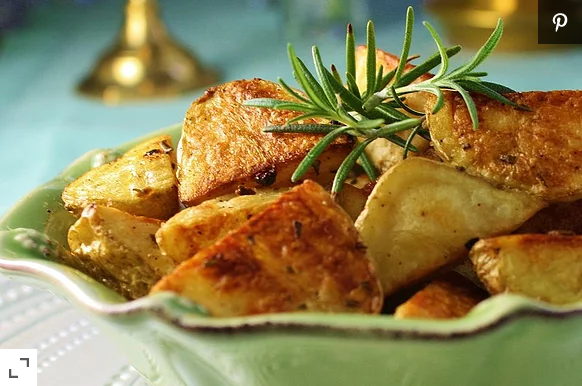

Oven potatoes

Description:
Golden on the outside, tender on the inside, these godly potatoes goes with anything!
Ingredients:
- 6-12 potatoes, cut into chunks
- 2 tablespoons of olive oil
- 1 teaspoon of seasoned salt
- 1 teaspoon of salt
- 1 teaspoon of cracked black pepper
Steps:
- Preheat oven to 200 degrees C (400 f).
- Rinse and dry potatoes with a paper towel and transfer to a large bowl. Add olive oil,
seasoned salt, salt and black pepper; mix well. Spread potatoes on a baking sheet.
- Bake in preheated oven for 30 minutes, turning potatoes occasionally. Continue baking
until potatoes are tender and golden brown, about 30 minutes more.
Return